Sønder Vinge
Ziemlich feinkörniger, graublauer Granit mit rotem Korn
Höhe: 180 cm
Breite: 132 cm
Dicke: 35 cm
Runenhöhe: 15,5 - 19,5 cm
Runeninschrift :
... errichtete diesen Stein zum Andenken an Urøkia und Katha, seine zwei Brüder ... verwundete und übte Zauberei.
Ein Ræti der Mann, der dieses Denkmal zerstört.

58 - Sønder Vinge (2) - Letztes Update 19.09.2025
Listennummer : DR 83 / DK MJy 24
| Navidaten: 56.40885 9.78671 oder: Kirkebakken 13, 8860 Ulstrup |
Transliteration: -u(þ)(i) : b(r)(u)ti : risþi : stin | : þensi : uftiR : uruku | auk : kaþu : bruþr : | siną : tuą : | ... sarþi : auk | siþ : r(a)(t)i : saR : mąnr : | ias : auþi : mini : þui
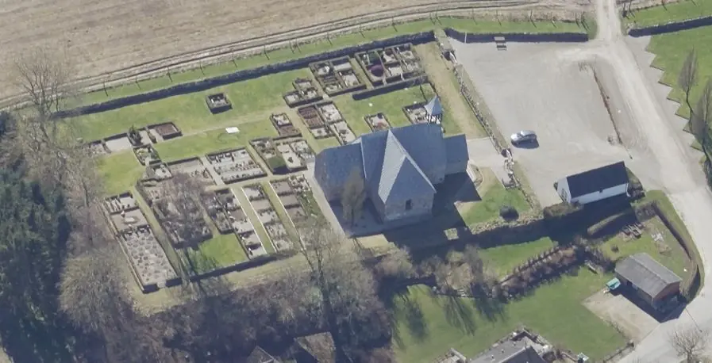
Das ist ein Luftfoto vom 02.04.2023 von Skråfoto das die Kirche von Sønder Vinge zeigt. Skråfoto ist eine Webanwendung, die von Klimadatastyrelsen weltweit kostenlos bereitgestellt wird - Freie Nutzung unter Beachtung der Lizenz: CC BY 4.0. Die Aufnahmen werden alle zwei Jahre erneuert und neben einer Senkrechtaufnahme wird ein Schrägbild aus jeder Himmelsrichtung angeboten, das man über eine Adresssuche aufrufen kann.
Der Runenstein wurde im Jahre 1866 als Eck- und Grundstein in der Kirche von Sønder Vinge von Pfarrer Theodor Christian Taaffe (*23.03.1824 in Gundslev/Maribo - 21.03.1885 in Keldby/Møn, zw. 1864 und 1879 Pfarrer im Pastorat Langå, Torup und Sønder Vinge - link-LIVES) entdeckt.
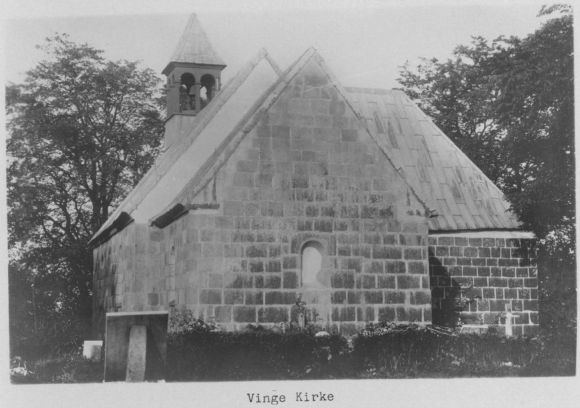
Er meldete dies mit einem Brief am 03.09.1868 an die Altertümerkommission nach Kopenhagen. Der Brief ist im Antikvarisk -Topografisk Arkiv in Kopenhagen aber leider nicht mehr auffindbar. Allerdings erhielt ich im Zuge meiner Anfrage diese Zeichnung von "Siegumfeldt" übermittelt - näheres dazu siehe weiter unten - 19.09.2025.

Taaffe schrieb aber auch noch einen zweiten Brief mit Datum vom 01.02.1869 an Prof. P. G. Thorsen (*07.08.1811 - 06.05.1883, Bibliothekar, Runenforscher und Historiker - link-LIVES - Artikel: Levnedsbeskrivelser af de ved Københavns Universitets Firehundredaarsfest promoverede Doktorer, Illustreret Tidende 1882, Nr. 1235 - vom 27.05.1833 / Grabstein in Varde / Eheschließung in Varde am 19. August 1848)
 Fotografie
zw. 1863-1900 von
Fotograf Budtz Müller
(*26.12.1837 -
30.12.1884) -
Det Kgl. Biblioteks billedsamling - Lizenz:
Public Domain
Fotografie
zw. 1863-1900 von
Fotograf Budtz Müller
(*26.12.1837 -
30.12.1884) -
Det Kgl. Biblioteks billedsamling - Lizenz:
Public Domain
und fügte dem eine Kopie einer Zeichnung von "Siegumfeldt" bei (Laut DR, Textband, 1942, Nr. 83, S. 120). Im Brief schreibt Pfarrer Theodor Christian Taaffe (übersetzt): "...eine Zeichnung des S-Vinge-Steins, die vom Genremaler Siegumfeldt angefertigt wurde, der bei mir wohnt. Die Zeichnung wurde bei Tageslicht ausgeführt und hilfsweise fuhr er mit den Fingern über den unebenen Stein, denn Siegumfeldt waren Runen völlig unbekannt".
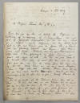 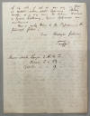 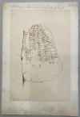


Den Brief und die dazugehörige Zeichnung fand ich am 27.09.2022 in der Königlichen Bibliothek in Kopenhagen in der Hinterlassenschaft von P. G. Thorsen in der Pappschachtel mit der Nummer 17 - näheres siehe unten.
Bei diesem "Genremaler Siegumfeldt" dürfte es sich meinen Recherchen nach um Herman Carl Siegumfeldt (*18.09.1833 - 27.06.1912, Kunst- und Landschaftsmaler - Meldebescheinigung - Begräbnisprotokoll - link-LIVE) handeln.
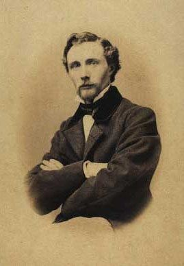
Fotografie von 1860 von Georg Holzweissig (*03.07.1834 - ?.03.1860) - Lizenz: Public Domain
So wie der Stein in der Mauer lag, waren die Runen teilweise erkennbar. Im Jahre 1869 wurde er herausgenommen und in einer Ecke des Waffenhauses aufgestellt, wo er sich noch heute befindet. Die Kirche ist normalerweise abgeschlossen.
Es ist der am schwierigsten zu lesende dänische Runenstein. Die Steinoberfläche gleicht einer Mondlandschaft mit Bergen und Kratern. Weder Scheinwerfer noch Taschenlampe können hier weiterhelfen. Im Detail ist die Inschrift unleserlich und ungedeutet. Es ist jedoch klar erkennbar, dass der Stein von einem Mann für seinen beiden Brüder errichtet wurde. Die Inschrift wird auf die Zeit 970 - 1020 datiert. Die Inschrift verläuft über insgesamt sieben senkrechte Linien und beginnt mit der mittlersten Linie von unten nach oben. Danach verläuft sie als sogenanntes "Bustrophedon" - bedeutet abwechselnde Schreibrichtung nach rechts und nach links.
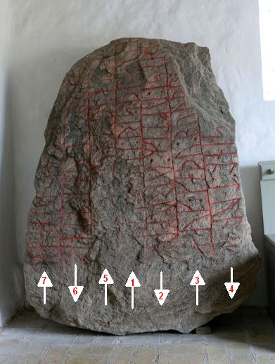
Erläuterungen aus der dänischen Runendatenbank: "Die ersten beiden Wörter der Inschrift sind höchstwahrscheinlich ein Name und ein Spitzname. Bei der Prüfung der Inschrift im Zusammenhang mit einem internationalen Runologentreffen im Jahr 1997 wurde vereinbart, dass die Lesung des zweiten Wortes als "bruti" formal möglich ist (Dazu: Nordiskt runnamnslexikon, Lena Peterson, 2007, auf der S. 52 mit dem Eintrag zu "Bryti" = Männerbeiname). Die Lektüre und Interpretation der Inschrift wird aufgrund der Textlücken allgemein viel diskutiert. Ob die Runenfolge siþ: r (a) (t) i als zusammengesetztes Wort wahrgenommen werden kann und ob dies korrekt als das Wort "sejd" + "ræte" identifiziert wird, ist umstritten, aber diese Lesart als Fluchformel muss z.Zt. wohl als beste Lösung angesehen werden."
Das Wort / der Beiname "Bruti" kommt auch noch in der Inschrift des Runensteins von Randbøl vor.
Nach meinen langjährigen Aufzeichnungen kam ich im Sommer 1990 erstmals zur Kirche von Sønder Vinge. Danach kam ich nochmals am Samstag, 26.05.2001, vorbei. Am Donnerstag, 25.08.2016, konnte ich diese Fotos machen.
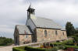 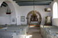 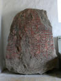 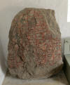 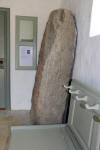


Im Rahmen meiner 2022er Jütland Wikinger Tour kam ich nun erneut am Donnerstag, 09.06.2022, an die Kirche. Der Graver war glücklicherweise zur Pflege des Kirchhofs vor Ort und schloss mir die Kirche auf.
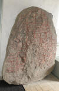 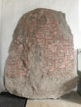 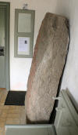 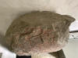


Von Prof. Julius Magnus Petersen (*04.09.1827 - 31.01.1917, Archäologischer Zeichner und Restaurator - link-LIVES - Bestattungsprotokoll)
 Bildquelle:
Fotografie von 1903 von Fotograf Marius Christensen
(*24.6.1874 -
25.6.1907) -
Det Kgl. Biblioteks billedsamling - Lizenz:
Public Domain
Bildquelle:
Fotografie von 1903 von Fotograf Marius Christensen
(*24.6.1874 -
25.6.1907) -
Det Kgl. Biblioteks billedsamling - Lizenz:
Public Domain
stammt auch diese Zeichnung, die 1879 in dem Werk von Prof. P. G. Thorsen (*07.08.1811 - 06.05.1883, Bibliothekar, Runenforscher und Historiker - link-LIVES - Artikel: Levnedsbeskrivelser af de ved Københavns Universitets Firehundredaarsfest promoverede Doktorer, Illustreret Tidende 1882, Nr. 1235 - vom 27.05.1833 / Grabstein in Varde / Eheschließung in Varde am 19. August 1848)
Bildquelle: Fotografie
zw. 1863-1883 von Fotograf Budtz Müller (*26.12.1837 -
30.12.1884) -
Det Kgl. Biblioteks billedsamling
- Lizenz:
Public Domain
"De danske Runemindesmærker, beskrevne og forklarede af P.G. Thorsen Anden Afdeling - Jyllands Runemindesmærker tilligemed Meddelelser om alle Øernes, Afbildninger og Text, I. Afbildninger)", Nr. 53, erschien - Google Scan.
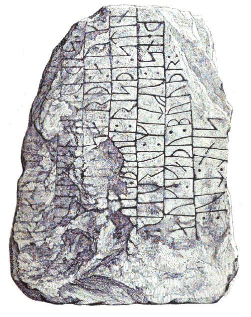
In dem 1880 erschienenen "Band II, Text" macht er auf den S. 149/150 Ausführungen zu seinen Studien über diesen Runenstein.
Prof. P. G. Thorsens Nachlass (Bezeichnet als: P. G. Thorsens optegnelser, tegninger m.m. vedrørende runer og runemindesmærker - überführt aus der Kopenhagener Universitätsbibliothek 1929 - Gemäß Ministerialschreiben vom 04.03.1929; früher benannt als Additamenta 612 kvart - findet sich in der Königlichen Bibliotek unter NKS 3296 (in mehreren einzelnen Pappschachteln). In der Pappschachtel Nr. 17 wird diese Zeichnung, die er auf den 05.10.1869 datiert hat, verwahrt und die ich bei meinem Besuch in der Königlichen Bibliothek in Kopenhagen am 27.09.2022 fotografieren durfte.

Über der Zeichnung hat er vermerkt, dass der Stein durch die Fürsorge von Pfarrer Theodor Christian Taaffe gereinigt und abgewaschen wurde, damit er ihn gut zeichnen konnte. Die hätte er dann am 13.09.1870 mit größter Sorgfalt überprüft.
Daneben hat er auch noch diese Zeichnung für das Runenwerk von Prof. Ludv. F. A. Wimmer (*07.02.1839 - 29.04.1920, Philologe und Runenforscher - link-LIVES - Politiets registerblade - Bestattungsprotokoll)
 Bildquelle: Fotografie
zw. 1877-1900 von Fotograf Hansen & Weller -
Det Kgl. Biblioteks billedsamling - Lizenz:
Public Domain
Bildquelle: Fotografie
zw. 1877-1900 von Fotograf Hansen & Weller -
Det Kgl. Biblioteks billedsamling - Lizenz:
Public Domain
"De danske runemindesmærker undersøgte og tolkede af Ludv. F. A. Wimmer, Andet Bind, Runestenene i Jylland og på øerne. 1899-1901, S. 225", geschaffen (Scan aus der in meinem Besitz befindlichen Ausgabe).
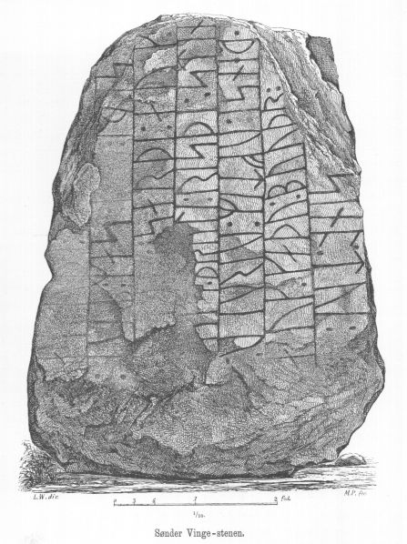
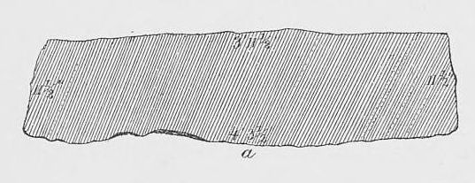
Zu Wimmers Interpretation der Inschrift, der den Runenstein vor Ort am 20. und 22.08.1877 - zusammen mit Pfarrer Theodor Christian Taaffe (*23.03.1824 - 21.03.1885) und Magnus Petersen - und nochmals am 18.07.1882 studierte, merkt Erik Moltke (*04.04.1901 - 19.10.1984, Runologe, Historiker) in DR, Textband,. 1942, Nr. 83, S. 121, an: "Die Lesung in DRM ist außerordentlich fehlerhaft..." Er macht dann dort ausführliche Angaben dazu.
Wimmer hat seine jahrelangen Aufzeichnungen der "Kgl. Bibliotek" in Kopenhagen überlassen. Ein Verzeichnis darüber wurde 1915 in Buchform herausgegeben - "Collectio runologica Wimmeriana: Fortegnelse over Ludv. F. A. Wimmers runologiske o. a. Samlinger i Det kgl. Bibliotek".
In seinen Unterlagen in der Königlichen Bibliothek befindet sich unter "III - Originaltegninger af de danske Runemindesmærker, udførte paa Undersøgelsesrejserne af Magn. Petersen og kontrollerede paa Stedet af Ludv. Wimmer, samt Prøvetryk af de paa Grundlag af de nævnte Tegninger, Aftryk o. s. v. til De danske Runemindesmærker" udførte Afbildninger med Wimmers Rettelser"


zu dem Runenstein von Sønder Vinge unter der Nr. 60 diese Zeichnung vom 25.08.1877, die ich bei meinem Besuch in derKöniglichen Bibliothek in Kopenhagen am 27.09.2022 fotografieren durfte. Daneben befindet sich noch dieses Arbeitsblatt von Wimmer.


Ein Scan/Foto dieser Zeichnung findet sich auch in der Digitale Sammlung des Nationalmusems Kopenhagen - Lizenz: Public Domain. Warum finden sich dort eigentlich nicht alle / weitere Zeichnungen von Magnus Petersen?
In dem Band 38 der im Jahr 1906 erschienenen "Zeitschrift für Deutsche Philologie" hat Hugo Gering (* 21. September 1847 - 3. Februar 1925, deutscher germanistischer und skandinavistischer Mediävist)
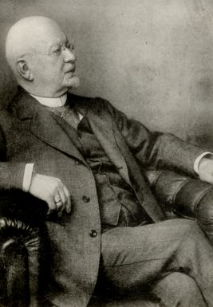
Bildquelle: Wikipedia - Lizenz: Public Domainab der S. 131 Kritik an der Lesung von Wimmers "s sarpi" geübt und gibt einen neuen Deutungsvorschlag für das Inschriftende.
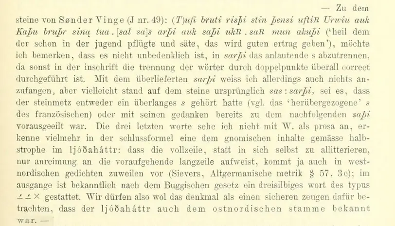
Erik Brate (*13.06.1857 - 11.04.1924, schwedischer Linguist und Runologe)
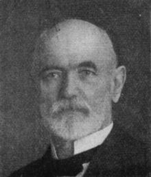
Bildquelle: Wikipedia - Lizenz: Public Domainhegt in einem Beitrag im Arkiv för nordisk Filologi, Band XXIX, im Jahr 1913, auf der S. 189 Zweifel an der Lesung von Wimmer.
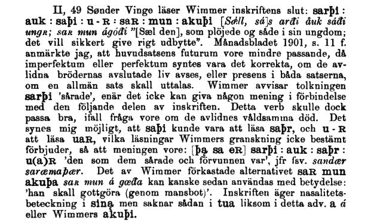
Im Jahr 1926 hat Lis Jacobsen (*29.01.1882 - 18.06.1961, dänische Runologin und Archäologin -link-LIVES - Taufe - Melderegister - Hochzeit)
 Bildquelle:
Wikipedia - Lizenz:
Public Domain
Bildquelle:
Wikipedia - Lizenz:
Public Domain
 Bildquelle:
Danske Studier 1978 - S. 5 -
Lizenz:
CC BY-NC-SA 4.0
Bildquelle:
Danske Studier 1978 - S. 5 -
Lizenz:
CC BY-NC-SA 4.0
entdeckt hatte. Sie führt weiter aus, das Wimmer bei seinen beiden Inaugenscheinnahmen des Runensteins identische Beobachtungen machte, davon aber später trotzdem aus unerklärlichen Gründen abwich. Sie hält ihm durch ausführliche Erklärungen vor, dass seine Vorstellungskraft, so scharf seine Beobachtungsgabe auch war, bei der Deutung dieser Inschrift stärker war. Sie führt aber auch aus: "...Natürlich nahm Wimmer keine Korrekturen entgegen seiner eigenen Überzeugung vor (ein greifbarer Beweis dafür ist, dass er der Nachwelt alle Zeichnungen, Probeabzüge und Kartonabreibungen hinterlassen hat, alles Material, anhand dessen seine Arbeit überprüft werden kann). Nein, er war völlig davon überzeugt, dass die von ihm vorgenommenen Korrekturen richtig waren. ... Die psychologische Erklärung ist, dass Wimmer nicht aufgeben wollte, er wollte eine Lösung finden, und als er schließlich glaubte, eine gefunden zu haben, gab er nicht auf, bis alle Hindernisse überwunden waren. Dieser hartnäckige Glaube an die eigene Hypothese ist natürlich äußerst gefährlich, verleiht aber andererseits eine unermüdliche Energie, weiterzumachen, bis alle Zweifel ausgeräumt sind, eine Energie, die für einen Gelehrten von unschätzbarem Wert ist. Dieser Energie verdanken wir es, dass alle Runeninschriften in Dänemark inzwischen gelesen werden konnten."
Diese sw Aufnahme hat Erik Moltke (*04.04.1901 - 19.10.1984, Runologe, Historiker)
 Bildquelle: Scan von Buchumschlag "Runerne i Danmark og ders
oprindelse" - Erik Moltke - 1976 - Lizenz:
CC-BY-SA
Bildquelle: Scan von Buchumschlag "Runerne i Danmark og ders
oprindelse" - Erik Moltke - 1976 - Lizenz:
CC-BY-SA
zw. dem 10. und dem 12.07.1930 angefertigt (mit nachgezogenen Runenzeichen).
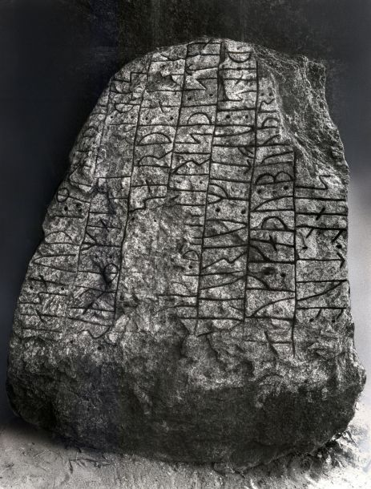
Der Digitale Sammlung des Nationalmusems Kopenhagen entnommen. Lizenz: CC-BY-SA
Erik Moltke trägt in den Anmerkungen zu DR 83 in Lis Jacobsen/Erik Moltke - Danmarks Runeindskrifter - 1942 - Text, Spalte 119 ff. - vor, dass die Lesung bei Wimmer in dessen Werk De danske runemindesmærker undersøgte og tolkede af Ludv. F. A. Wimmer, Andet Bind, Runestenene i Jylland og på øerne. 1899-1901, S. 225 außerordentlich fehlerhaft sei. Mit wirklicher Sicherheit könne man vieles von dem was Wimmer dort vorträgt überhaupt nicht lesen.
Im Vorfeld zu dem 2016 erschienenen Buch von Lisbeth M. Imer (*1973, Runologin am Nationalmuseum Kopenhagen) "Danmarks Runesten - en fortælling" reiste sie mit dem Fotografen Roberto Fortuna zur Bestandsaufnahme durch die Lande. Dieser hat die Runensteine mit Schräglicht aufgenommen und darüber wirklich herausragende Fotos erzielt. Dieses Foto entstand am 07.03.2012.
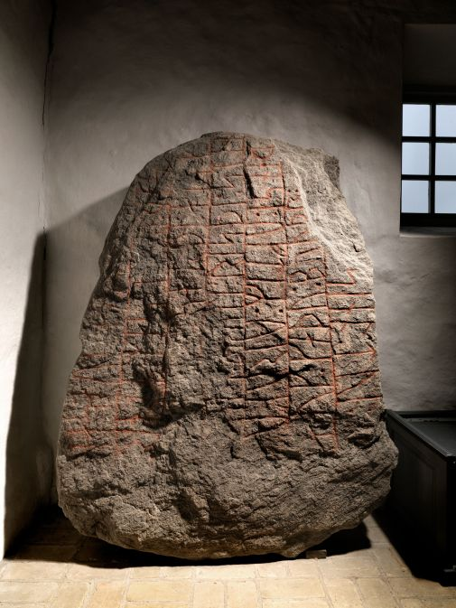
Der Digitale Sammlung des Nationalmusems Kopenhagen entnommen. Lizenz: CC-BY-SA
Die Informationen zu diesem Runenstein aus der dänischen Runendatenbank finden sich hier.
Der entsprechende Eintrag in "Fund og Fortidsminder" ist hier verlinkt. Darin ist inzwischen auch dieser Zustandsbericht aus 2018 des Steinrestaurators Leif Vognsen eingebunden.
Über diesen Link finden sich zu dem Runenstein Informationen des Forschungsprojektes "Runes" der Akademie der Wissenschaften zu Göttingen.
Über die Webseite der Kirche kann man sich eine Broschüre zur Historie der Kirche in dänischer Sprache abrufen.